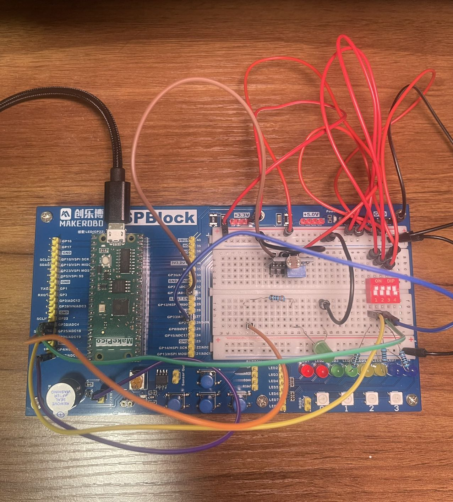
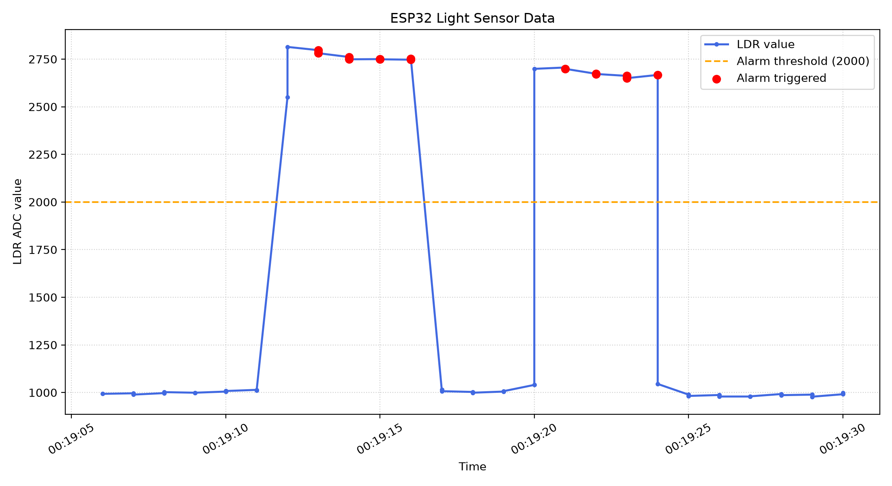

Analogue light sensing
Reads the LDR analogue output and compares changing light levels against a configurable alarm threshold.
Embedded Systems · Personal Project · 2026
An ESP32 prototype for light sensing, alarm control, local Wi-Fi monitoring and Python data logging.

Project overview
The project began as a simple light-dependent resistor experiment and developed into a complete embedded system. The ESP32 monitors ambient light, evaluates alarm conditions and controls visual and audible outputs.
I then extended the prototype with physical controls, a local Wi-Fi monitoring interface and a Python application that records serial data for later analysis.
Core functionality
Reads the LDR analogue output and compares changing light levels against a configurable alarm threshold.
Uses confirmation timing and state logic to reduce false alarms caused by brief changes in the sensor reading.
Hosts a browser-accessible status page showing sensor, alarm and output states on the same local network.
Parses structured serial output, stores readings in CSV format and visualises sensor behaviour over time.
Development process
Established the ESP32 hardware setup, read analogue LDR values and verified LED output through repeatable tests.
Added threshold-based alarm behaviour, button debouncing and independent control of LED and buzzer outputs.
Implemented an ESP32 web server that presents live sensor and system states through a local browser page.
Extended the system with Python serial parsing, CSV logging, summary statistics and graphical analysis.
Test results
The recorded data shows clear transitions between lower and higher LDR readings. Alarm events are marked when the readings cross the test threshold.
Recording the serial output made it possible to check the system behaviour after testing instead of relying only on live observations.

Engineering decisions
Analogue readings provide more information than a simple digital light/dark output and allow the threshold to be calibrated from observed values.
A sustained-darkness check prevents a brief shadow or noisy reading from immediately changing the alarm state.
Hosting the interface directly on the ESP32 avoids a cloud service and keeps monitoring available within the local network.
Source and documentation
Code, system diagrams, test evidence and the development log are available on GitHub.